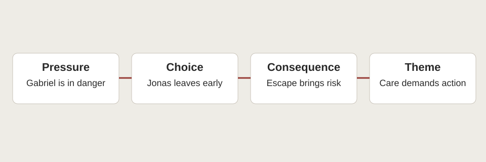

Jonas / society
- Evidence
- Colour and release · Chs. 12–13, 19
- Choice
- Protects Gabriel by leaving · Ch. 21
- Consequence
- Resists immediate harm; faces survival danger
- Theme
- Agency can be necessary without guaranteeing safety.
A HUSKYDADDY NOVEL STUDY
Follow how knowledge changes the pressures a character must answer.
KEY IDEA
Follow pressure through a choice and its cost.
A disagreement matters because it changes a relationship, an action, or a way of thinking.
Character versus society concerns institutions; character versus self concerns competing values or needs; character versus character concerns incompatible purposes or understandings. Categories can overlap. Not every disagreement makes a person an enemy.
Full-novel analysis is hidden. Choose “Full novel” above when you are ready. Chapter-by-chapter notes remain available in the reading guide.

Evidence note: Novel events below are paraphrased. Chapter numbers locate the relevant events; use page numbers from your own edition in formal MLA writing. Interpretations are arguments to test, not verified statements of authorial intention.
The conflict begins inside acceptance. Jonas initially trusts the Elders to match work to ability; he does not begin as a critic of all authority. Training makes the restrictions visible through exceptions.
Permission to lie in Chapter 9 disrupts moral equality, and colour in Chapters 12–13 allows him to imagine choices withheld from everyone else. The opposition is therefore between a developing judgement and a system that has largely assigned judgement to established roles.
The turning point is Chapter 19, when the release recording exposes killing beneath ordinary procedure. By taking Gabriel in Chapter 21, Jonas acts on a judgement the community does not authorize. The consequence is both protective and dangerous: Gabriel escapes immediate release, but the boys face hunger and exposure.
A strong theme statement acknowledges both sides. Resisting institutional harm can be necessary even when independence cannot guarantee safety.
Internal conflict involves competing commitments within a character, not simply feeling sad. In Chapter 13, Jonas values colour and the possibility of choosing, yet still fears that independent people will choose wrongly. One part of his reasoning repeats the community’s protective logic while another recognizes its losses.
This makes his development gradual. New information does not instantly remove the habits through which he interprets it.
Love and pain deepen the pressure. Stopping the pills in Chapter 16 preserves emotional experience while weakening his comfortable participation in familiar life. By Chapter 22, he can imagine the food and protection he has left without wishing Gabriel back into danger.
His choice does not eliminate fear. It changes which obligation directs his response to fear. The theme is moral maturity under uncertainty, rather than the unrealistic idea that courage means no longer needing safety.
Father’s early actions encourage trust. He seeks additional care for Gabriel and takes nurturing seriously. That evidence must remain in the analysis after Chapter 19. Otherwise, the later contradiction loses its force. The recording is devastating precisely because the person using a gentle voice is the familiar caregiver Jonas believed he understood.
The conflict changes from an argument within a household to an ethical break with a role Father performs. The novel does not give access to Father’s private thoughts sufficient to establish every degree of awareness or intention. Jonas recognizes the killing; Father presents it as routine.
That gap allows readers to question both institutional conditioning and individual responsibility. Taking Gabriel away is a direct practical response to the threat associated with Father’s work. It does not establish that Father never cared, nor that caring manners excuse harmful action.
The Giver is not a simple opponent. His knowledge makes Jonas’s questioning possible, and their relationship includes affection and shared purpose. However, training creates tensions about pain, responsibility, and change.
In Chapter 15, he asks Jonas to take a battlefield memory and afterward asks forgiveness. The episode exposes a limit of mentorship: relieving one person’s burden may impose harm on the learner.
Rosemary’s story in Chapter 18 makes caution understandable without proving that caution should prevent change. In Chapter 20, Jonas wants the Giver to leave with him, while the Giver believes he must stay to support the people. Their disagreement becomes a division of responsibility rather than a victory by one over the other.
This matters thematically because ethical action cannot be judged by a single visible sign such as departure. Motive, need, preparation, and anticipated consequences all matter.
The war game in Chapter 17 is a useful comparison. Asher sees recreation; Jonas recalls actual suffering. Their disagreement emerges from unequal experience, so labelling Asher an antagonist would flatten the scene.
A foil can reveal a protagonist’s change without becoming a villain. Jonas’s compassionate response is understandable, but his difficulty explaining it also matters. The episode asks how moral understanding can be communicated to people who do not yet share the evidence behind it.
Read across to compare; use stacked rows for a closer view.
| Conflict | Evidence | Choice | Consequence | Theme |
|---|---|---|---|---|
| Jonas / society | Colour and release · Chs. 12–13, 19 | Protects Gabriel by leaving · Ch. 21 | Resists immediate harm; faces survival danger | Agency can be necessary without guaranteeing safety. |
| Jonas / self | Wrong-choice fears · Ch. 13; strong feelings · Chs. 16–17 | Preserves feeling and acts despite fear | Comfortable belonging becomes difficult | Maturity revises inherited judgement. |
| Jonas / Father’s role | Care for Gabriel vs twin recording · Chs. 1–3, 19 | Refuses to leave Gabriel in danger | Trust changes; care becomes disobedience | Gentle manner does not excuse harm. |
| Jonas / Giver’s different obligations | Training pain · Ch. 15; plan · Ch. 20 | Accept different roles in change | Separation serves a shared purpose | Responsibility depends on need, not one outward action. |
| Jonas / Asher’s perspective | War game · Ch. 17 | Jonas objects; Asher resists the intervention | Friendship becomes strained | Understanding may separate people before it connects them. |
Discuss: where does a conflict begin before the characters openly argue? Compare Jonas’s uncertainty about choice with his later action for Gabriel.
Paragraph task: trace one conflict through origin, development, and turning point. Explain a consequence that complicates your initial judgement.